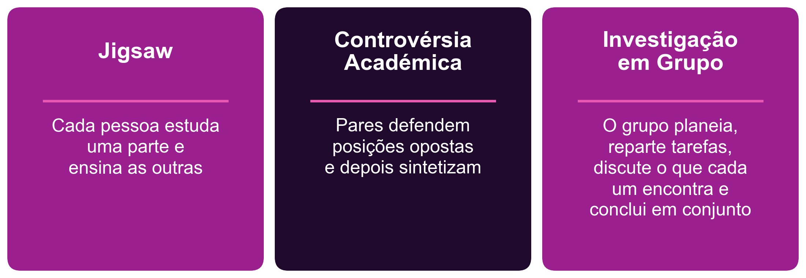
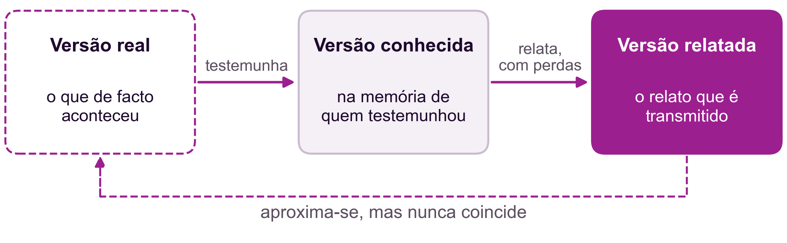
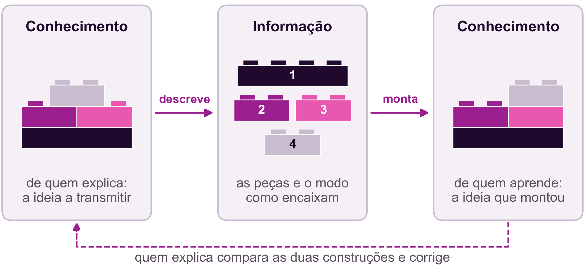

9 Aprendizagem Colaborativa e Conhecimento Coletivo
Aprendizagem Colaborativa e Conhecimento Coletivo
Introdução
As primeiras tentativas de usar o computador no ensino viam-no como um professor automatizado: um sistema que apresentava o conteúdo em pequenas partes, verificava de imediato as respostas e reforçava os comportamentos corretos, segundo os princípios behavioristas da instrução programada (Castro e Menezes 2011). Quem aprendia estudava ao seu ritmo, como recetor passivo de informação. Antes da Internet, o computador ensinava, mas ensinava sozinho.
A ideia de aprender com os outros é anterior a essas tentativas. O estudo de métodos dedicados à aprendizagem colaborativa começou no início do século XX, com John Dewey, e foi retomado com maior intensidade a partir da década de 1970, destacando-se o trabalho de Robert Slavin e de outros investigadores da Johns Hopkins University (Castro e Menezes 2011). Neste paradigma, o conhecimento não passa pronto de uma pessoa para outra: cada uma constrói-o. Com os sistemas de comunicação e as redes sociais, o computador deixa de ser o professor e passa a ser a plataforma através da qual as pessoas colaboram.
9.1 Aprendizagem Colaborativa
Aprender é uma atividade que decorre da procura contínua de adaptação ao meio físico e social e que acontece em todos os momentos da vida (Castro e Menezes 2011): perante um software novo, um cargo novo ou uma formação na empresa, tanto como numa sala de aula. Muito se aprende com os outros: resolvendo problemas em conjunto, obtendo explicações sobre problemas já resolvidos, explicando soluções próprias, debatendo vantagens e desvantagens de uma escolha, fazendo e recebendo críticas e construindo sínteses coletivas (Castro e Menezes 2011).
A aprendizagem colaborativa junta pessoas que querem ou precisam de aprender, numa escola, numa empresa ou noutro contexto, e assenta em dois princípios (Castro e Menezes 2011):
- as pessoas trabalham juntas para aprender;
- cada uma é responsável pela sua própria aprendizagem e pela das outras.
Estes princípios implicam objetivos coletivos: quanto melhor forem cumpridos, maiores são as possibilidades de aprendizagem de cada participante (Castro e Menezes 2011). É esta interdependência que distingue a aprendizagem colaborativa de um simples trabalho de grupo.
9.2 Métodos de Aprendizagem Colaborativa
Três métodos ilustram formas concretas de estruturar a aprendizagem colaborativa (Figura 9.1): o Jigsaw, a Controvérsia Académica e a Investigação em Grupo. Têm um historial consistente de uso em contexto escolar, são claramente distintos entre si e há relatos da sua aplicação com suporte computacional (Castro e Menezes 2011). Nada impede que sejam usados noutras situações em que haja quem queira ou precise de aprender. Nas descrições seguintes, quem orienta é a pessoa que prepara e acompanha a atividade: um professor, numa escola, ou quem assuma essa função noutro contexto.

9.2.1 Jigsaw
O Jigsaw (“quebra-cabeças” ou puzzle) foi desenvolvido por Elliot Aronson num projeto educativo no Texas, para criar um ambiente de estudo em que todos são valorizados, aumentar a colaboração e a partilha e eliminar a competição excessiva. O tema é dividido em partes e cada pessoa explora uma delas, trazendo ao grupo a sua “peça” (Castro e Menezes 2011). A abordagem original tem quatro estágios:
- Introdução: quem orienta organiza os grupos Jigsaw (os grupos originais) e apresenta os tópicos e os materiais de apoio.
- Exploração: os participantes reorganizam-se em grupos de especialistas e estudam cada tópico em profundidade.
- Relato e transformação: cada um regressa ao grupo original e explica aos outros o tópico que estudou, partindo da premissa de que, para compreender o todo, é preciso compreender primeiro as partes.
- Integração e avaliação: o que foi obtido nos grupos originais é integrado com todos e o resultado é avaliado.
A interdependência é total: cada pessoa tem uma peça que as outras não têm e, sem a contribuição de todas, o grupo não reconstrói o tema completo. Quem orienta tem um papel central, porque pedir às pessoas que trabalhem em grupo não basta: os grupos sem estrutura nem incentivo não alcançam efeitos positivos na aprendizagem. Na variante Jigsaw II, proposta por Slavin, todos podem ler todo o conteúdo e complementar a explicação de cada colega, o que simplifica a preparação (Castro e Menezes 2011).
Um exemplo fora da escola: uma empresa adota um software novo. Cada pessoa junta-se às que ficaram com o mesmo módulo, estuda-o com elas e regressa à sua equipa para o ensinar.
9.2.2 Controvérsia Académica
A Controvérsia Académica procura chegar a um consenso quando há discordância sobre uma ideia, informação, conclusão, teoria ou opinião. Os conflitos intelectuais são inevitáveis e desejáveis, porque promovem um raciocínio mais elaborado, maior retenção e maior criatividade do que a aprendizagem competitiva e individualista. Para trazer benefícios, o método exige um contexto colaborativo, participantes heterogéneos, informação relevante distribuída entre eles e capacidade de argumentação racional (Castro e Menezes 2011).
As duas posições têm de estar em confronto: posições apenas diferentes e complementares juntam-se sem discussão, situação própria do Jigsaw. Um critério prático permite confirmá-lo: aceitar uma posição obriga a contestar a outra, ambas se podem defender com argumentos e é possível construir uma síntese. A posição de cada par é designada e pode não corresponder à opinião de quem a defende, o que torna possível a inversão.
O método estrutura-se em cinco atividades (Castro e Menezes 2011):
- Preparação: num grupo de quatro pessoas, dividido em dois pares, cada par recebe uma das duas posições, pesquisa-a e constrói os argumentos.
- Apresentação: cada par apresenta o melhor argumento possível e ouve com atenção o do outro par.
- Discussão aberta: os pares continuam a defender a sua posição, analisam criticamente a contrária e respondem às críticas.
- Inversão: os pares trocam de posição e defendem a posição oposta, de forma completa e persuasiva.
- Síntese: o grupo de quatro volta a reunir-se e integra as melhores ideias de ambos os lados numa única posição.
O objetivo não é vencer o debate: é chegar à melhor posição sobre o assunto e a argumentos com que todo o grupo possa concordar e comprometer-se. Numa empresa que pondera mudar de software, por exemplo, um par defende “mudar já” e o outro “esperar um ano”; uma síntese possível é mudar já, mas só numa equipa.
9.2.3 Investigação em Grupo
Na Investigação em Grupo, os participantes trabalham em pequenos grupos para examinar, experimentar e compreender os temas centrais de estudo. O método combina em simultâneo quatro componentes (Castro e Menezes 2011):
- investigação: a aprendizagem é organizada como um processo de investigação;
- interação: a dimensão social, a comunicação entre os membros do grupo;
- interpretação: o esforço individual de dar significado à informação recolhida;
- motivação intrínseca: o envolvimento emocional de cada um no que estuda.
Desenvolve-se em seis estágios (Castro e Menezes 2011):
- identificar o tema e organizar os grupos, por interesses e de forma heterogénea;
- planear em conjunto o que estudar e como, dividir as tarefas e definir os objetivos;
- executar a investigação: recolher informação, analisar dados e tirar conclusões;
- preparar o relatório final;
- apresentar o relatório final;
- avaliar o trabalho de cada grupo.
O grupo planeia e conclui em conjunto; cada elemento cumpre as suas tarefas e faz a sua própria interpretação. Ninguém aprende isolado.
9.2.4 Jigsaw ou Investigação em Grupo?
Os dois métodos dividem trabalho, mas não dividem a mesma coisa (Tabela 9.1).
| Jigsaw | Investigação em Grupo | |
|---|---|---|
| O que se divide | o conteúdo a aprender, em partes | as tarefas de uma investigação comum |
| Quem divide | quem orienta a atividade | o próprio grupo, ao planear |
| Como se partilha | numa etapa obrigatória, em que cada um ensina a sua parte | por interação ao longo do trabalho, sem etapa de ensino |
| O que se pretende | que cada um compreenda o todo | que o grupo investigue um tema e o apresente num relatório |
Em ambos há divisão. Só o Jigsaw obriga cada pessoa a ensinar a sua parte: a Investigação em Grupo prevê interação e interpretação individual, mas a descrição do método não inclui uma etapa em que cada um ensine os outros.
9.2.5 Dividir o trabalho não é colaborar
No modelo da Teoria da Atividade (Secção 4.3), a divisão de trabalho organiza quem faz o quê. No Modelo 3C (Secção 4.4), corresponde à coordenação, uma das três dimensões da colaboração, a par da comunicação e da cooperação (Fuks et al. 2011). Repartir tarefas é necessário, mas não chega.
Um caso frequente é o de um site feito em grupo: uma pessoa faz só o HTML, outra só o CSS e outra só o JavaScript; no fim juntam os ficheiros e cada uma conhece apenas a sua parte. É um Jigsaw por acabar: faltam o grupo de especialistas, o ensino aos colegas (estágio 3) e a integração e avaliação (estágio 4). Falha também o princípio de que cada pessoa é responsável pela aprendizagem das outras.
Para realizar um trabalho, a perceção do Modelo 3C não exige que cada um saiba tudo o que os outros fazem: basta saber o suficiente para fazer a sua parte em articulação com as restantes. Quando o objetivo é aprender, é diferente, porque cada pessoa precisa de compreender o todo. Se todos têm de saber tudo, cada um tem de ensinar a sua parte: convém marcar um momento para isso e confirmar que todos conseguem explicar as três.
9.2.6 Componentes essenciais
Apesar de diferentes entre si, os três métodos partilham componentes essenciais (Castro e Menezes 2011): objetivos de grupo, que incentivam os participantes a apoiarem-se uns aos outros; responsabilidade individual, que exige que cada membro domine os conceitos que explica aos colegas; e oportunidade igual de sucesso, que reconhece cada pessoa pelo seu esforço, independentemente das suas capacidades de partida.
9.3 Suporte Computacional
A colaboração requer sistemas para registar as produções individuais, partilhá-las, coordenar as ações, recuperar a informação produzida e refletir sobre o resultado. Além dos sistemas de comunicação (correio eletrónico, listas de discussão, chat e fórum), os métodos pedem apoio para formar grupos (por interesses, conhecimento prévio ou perfil), preparar a atividade, explorar tópicos, argumentar, registar e refletir (blog, wiki), sintetizar (glossários e mapas concetuais), organizar conteúdos e planear, acompanhar e avaliar o trabalho (Castro e Menezes 2011).
9.3.1 Os três C na aprendizagem colaborativa
Cruzando estes apoios com o Modelo 3C (Secção 4.4), obtém-se a organização da Tabela 9.2. Os três C não funcionam isolados: da comunicação nascem compromissos, a coordenação organiza-os e a cooperação traz imprevistos que pedem nova comunicação (Fuks et al. 2011).
| Dimensão | O que se faz | Com que apoio |
|---|---|---|
| Comunicação | explicar, argumentar e esclarecer dúvidas | fórum, chat e videoconferência (Secção 5.2) |
| Coordenação | formar grupos, planear, repartir papéis e tarefas, avaliar | gestão de grupos, calendário, avaliação por pares |
| Cooperação | registar, refletir, sintetizar e construir em conjunto | blog, wiki, glossário, mapa concetual |
No Jigsaw, por exemplo, há comunicação quando cada um explica a sua parte aos outros; coordenação quando se formam os grupos originais e de especialistas e se decide quem fica com cada parte; e cooperação quando o grupo junta as partes numa síntese comum. A perceção, ao centro do modelo, é ter noção do que os outros estão a fazer. Numa atividade de aprendizagem interessa também saber o que cada um já compreendeu, para que seja possível comparar e corrigir.
9.3.2 O que cada método exige da plataforma
Na transposição dos métodos para contextos mediados por computador usam-se guiões de colaboração (CSCL scripts), assentes em três esquemas principais (Kobbe et al., 2007, citados por Castro e Menezes 2011). Cada um coloca exigências diferentes à plataforma (Tabela 9.3).
| Método e esquema | Como se organiza a interação | O que se pede à plataforma |
|---|---|---|
| Jigsaw (esquema Jigsaw) | pares ou grupos com informação complementar | conteúdos organizados pela partição do tema |
| Controvérsia Académica (esquema do conflito) | pares com opiniões contraditórias, para criar conflito sociocognitivo | conteúdos agrupados a favor e contra, e um fórum onde os papéis possam alternar |
| Investigação em Grupo (esquema recíproco) | papéis alternados de questionamento e de tutoria | pesquisa de recursos na web, por exemplo com marcação colaborativa (Secção 3.5) |
Os ambientes virtuais de apoio ao ensino e à aprendizagem replicam, na sua grande maioria, estruturas rígidas de organização das atividades, muito limitantes para a variedade de esquemas destes métodos (Castro e Menezes 2011). A plataforma deve servir o método, e não o contrário.
9.3.3 Plataformas atuais
A Tabela 9.4 sugere formas de montar cada método em plataformas atuais; a escolha depende do que cada grupo ou organização já usa. O Moodle permite criar grupos e agrupamentos, dar a cada grupo o seu fórum e usar as atividades wiki, glossário e workshop, esta última de avaliação por pares, com atribuição manual ou aleatória dos avaliadores (Moodle 2026). No Microsoft Teams, as salas de grupo de uma reunião podem ser atribuídas manualmente ou ao acaso (Microsoft 2026). O Miro é um quadro colaborativo para trabalho em tempo real ou assíncrono, com comentários (Miro 2026).
| Método | O que é preciso | Moodle | Outra ferramenta |
|---|---|---|---|
| Jigsaw | grupos originais e de especialistas; conteúdos por parte | grupos e agrupamentos, com um fórum por grupo | Teams: salas de grupo para cada ronda |
| Controvérsia Académica | pares com posições opostas, discussão aberta e inversão | um fórum por par e um fórum comum | Teams: uma sala por par e a sala principal para a discussão |
| Investigação em Grupo | planear, registar, sintetizar e avaliar | wiki para o relatório e workshop para a avaliação | Miro: planeamento e mapas concetuais |
9.4 Conhecimento Coletivo
Muitos dos problemas que hoje se resolvem em organizações são demasiado complexos e multidisciplinares para uma só pessoa. O conhecimento coletivo é a combinação dos conhecimentos individuais de um grupo com um objetivo comum, e é mais rico do que a simples soma desses conhecimentos, porque a combinação de diferentes perspetivas revela relações que não são visíveis quando cada conhecimento é apresentado de forma isolada (Borges 2011).
Quando um episódio passado não foi documentado, é preciso recuperá-lo a partir dos testemunhos de quem o presenciou. Contar histórias é uma forma de representar esse conhecimento, mas em situações complexas dificilmente uma pessoa sozinha consegue contar a história inteira, porque cada uma conhece apenas uma parte (Borges 2011).
9.4.1 Um episódio, vários relatos
Borges (2011) propõe um episódio hipotético: uma perseguição numa rua, relatada por nove testemunhas. A Tabela 9.5 apresenta oito desses relatos, adaptados; o nono é o de Adriana, dona de uma loja onde ocorre um assalto.
| Testemunha | Relato |
|---|---|
| Mariano, a caminhar na rua | “Vi três homens a correr, dois mais atrás e um à frente. Parecia uma perseguição. Pouco depois ouvi uma sirene e uns estalidos que pareciam tiros.” |
| Flávia, a sair de uma loja | “Um homem que corria esbarrou em mim e derrubou-me. Vi uma carteira ao meu lado e gritei ‘a carteira!’, mas ele continuou a correr.” |
| Hugo, polícia em ronda | “Vi uma mulher caída no chão a gritar ‘a carteira!’ e três homens a afastar-se a correr. Pensei que fosse um assalto e fui atrás deles.” |
| José, motorista de autocarro | “Dois homens pediram para entrar e para esperar por um terceiro. Quando este entrou, fechei a porta e arranquei.” |
| Marcelo, à espera do autocarro | “Passaram por mim três homens a correr e um quarto, que disparou três vezes para o ar. Mais à frente, vi um polícia de arma na mão atrás de uma parede.” |
| Rafael, a caminho do metro | “Vi dois homens a correr na minha direção. Na estação, uma mulher, muito nervosa, dizia que a polícia perseguia traficantes.” |
| Renata, amiga de Flávia | “Encontrei a Flávia caída no chão. Mostrou-me uma carteira e, pela fotografia, reconheci o dono: o Amauri, meu vizinho.” |
| Vanessa, à janela do 7.º andar | “Vi pessoas a correr em todas as direções e um polícia de arma na mão. Pensei que fossem carteiristas, fechei a janela e voltei ao trabalho.” |
Cada narrador seleciona o que inclui no relato e interpreta o que viu a partir da sua perspetiva. Nos relatos misturam-se factos (Marcelo vê um homem disparar), interpretações (Mariano ouve sons que lhe parecem tiros) e especulações (Vanessa supõe que se trata de carteiristas). Como quem relata nem sempre distingue estes casos, cabe a quem recebe identificá-los e, se necessário, perguntar (Borges 2011).
9.4.2 As três versões de um episódio
Na recuperação de um episódio distinguem-se três versões (Figura 9.2) (Borges 2011):
- a versão real, o que de facto aconteceu, um conceito abstrato que raramente é possível reconstituir por completo;
- a versão conhecida, guardada na mente de quem testemunhou o episódio;
- a versão relatada, o relato elaborado a partir da lembrança dos narradores.
A versão conhecida é conhecimento tácito: está na mente de quem o detém e ainda não foi formalizado. É concreto para essa pessoa, que nem sempre sabe tudo o que sabe, mas abstrato para as outras enquanto não for transmitido. Opõe-se ao conhecimento formal (explícito), que fica registado e pode ser consultado por quem não esteve presente. O que Hugo viu na rua é tácito; se o contar a um colega, continua tácito, agora em duas pessoas; quando escrever o relatório, passa a formal.

9.4.3 Transmitir conhecimento: a informação e a reconstrução
O conhecimento pode transmitir-se através da informação, quando esta é guiada por quem explica, de modo que a outra pessoa forme a ideia que se pretende transmitir. Pode pensar-se no conhecimento como um objeto construído em LEGO (Figura 9.3): com as mesmas peças montam-se construções muito diferentes. A informação são as peças e o modo como encaixam umas nas outras. Transmitir é conseguir descrever a construção de modo que a outra pessoa monte, do seu lado, a mesma, ou seja, tenha a mesma ideia.

Quem explica precisa, por isso, de ver o que foi montado, comparar e corrigir: na figura, a peça de cima ficou fora do sítio. Contam também as peças que quem aprende já tem: se faltam peças, isto é, conhecimento prévio, a melhor descrição não chega. O que viaja é a informação; o conhecimento é remontado por quem a recebe.
9.4.4 As perdas na transmissão
Borges (2011) chama transmissão do conhecimento a dois processos:
- a socialização, a explicação oral, que replica o conhecimento noutras mentes, mas o mantém no nível tácito e só chega a quem está presente;
- a externalização, ou formalização, o registo escrito, que traz o conhecimento do nível tácito ao formal e permite partilhá-lo com mais pessoas e expandi-lo.
Em ambos há perdas. Na socialização, quem conta um conto acrescenta um ponto: a cada nova transmissão, parte do conhecimento perde-se e o que passa altera-se. É o efeito que Borges (2011) designa por “telefone sem fio”, o jogo conhecido em Portugal por “telefone estragado”. Na externalização, nem sempre se consegue escrever tudo o que se tem na memória.
Por isso a versão relatada difere da conhecida: deixa de fora o que cada narrador não achou relevante, esqueceu ou percebeu mal. No episódio da rua, nenhum narrador descreve os homens que correm, o que talvez ajudasse a identificá-los nos outros relatos, e Hugo, o polícia, não refere os tiros que Mariano ouviu e Marcelo viu. Recuperar o que aconteceu exige combinar várias versões.
9.5 Group Storytelling
O group storytelling, ou contagem de histórias em grupo, é uma técnica de construção de histórias em que mais de uma pessoa contribui, de forma síncrona ou assíncrona, no mesmo local ou à distância, por meio de diversos meios. Há vários narradores, mas uma só história, que por vezes mantém várias versões, para refletir perspetivas diferentes ou controvérsias não resolvidas. Aplicado à recuperação do conhecimento, procura aproximar a versão relatada da versão conhecida por cada participante (Borges 2011).
A técnica atribui, tipicamente, quatro papéis (Borges 2011):
- narrador (o contador da história): uma pessoa envolvida no episódio, ou que pode contribuir para a sua construção, que relata a sua versão dos factos;
- facilitador: procura inconsistências, contradições e lacunas, relaciona os relatos, levanta questões e estimula a participação;
- revisor: identifica passagens ambíguas, incompletas ou mal redigidas; é um papel opcional, porque o facilitador também o pode fazer;
- administrador: coordena a dinâmica, convida os participantes, cria a estrutura inicial e estabelece prazos.
Cada participante pode ter mais do que um papel e cada papel pode ser exercido por mais do que uma pessoa. A recuperação depende de uma atitude colaborativa: se as pessoas não quiserem colaborar, é muito difícil. As lacunas deixadas por falhas de memória não devem ser preenchidas com especulação; as conjeturas ficam separadas dos factos, para não induzir relatos falsos (Borges 2011).
9.5.1 Relações entre relatos
Os relatos de um mesmo episódio relacionam-se de várias formas. A Tabela 9.6 apresenta quatro, com exemplos do episódio da rua; há outras, como a posposição, a simultaneidade e a contraposição (Borges 2011).
| Relação | Quando ocorre | No episódio da rua |
|---|---|---|
| Confirmação | um relato confirma o que outro já descreveu | Marcelo vê um polícia de arma na mão; Vanessa, da janela, vê o mesmo |
| Inconsistência | dois relatos têm informações em conflito | Mariano vê três homens a correr, Rafael vê dois e Marcelo vê quatro |
| Precedência | um evento antecede outro no tempo | Flávia cai antes de Renata chegar e a encontrar no chão |
| Gap | falta informação entre eventos para que se perceba o que aconteceu | falta ligar os relatos da rua ao de José, o motorista do autocarro |
Representar estas relações numa rede semântica, mesmo incompleta, ajuda a organizar os eventos e a ver o que falta. Explicitar um gap é também uma forma de conhecimento: pode levar um narrador a lembrar-se de algo, ou mostrar que são precisos mais narradores (Borges 2011).
As relações são mais ricas quando são os próprios narradores a estabelecê-las. Ao lerem os relatos dos outros, mudam de perspetiva, recordam o que tinham esquecido e ampliam o seu relato. É esta sinergia que torna o conhecimento coletivo mais do que a soma dos conhecimentos individuais (Borges 2011).
9.6 Síntese
Este capítulo tratou da aprendizagem como processo social e da construção coletiva do conhecimento:
- A aprendizagem colaborativa substitui o computador-professor por uma construção conjunta do conhecimento, entre pessoas que se responsabilizam umas pelas outras (Castro e Menezes 2011)
- O Jigsaw, a Controvérsia Académica e a Investigação em Grupo estruturam a interdependência de formas diferentes; só o Jigsaw obriga cada pessoa a ensinar a sua parte (Castro e Menezes 2011)
- Dividir o trabalho não é colaborar: a coordenação tem de ser acompanhada de comunicação e cooperação (Fuks et al. 2011)
- O conhecimento coletivo é mais rico do que a soma dos conhecimentos individuais; a recuperação de um episódio distingue a versão real, a conhecida e a relatada (Borges 2011)
- O que se transmite é informação, que quem a recebe tem de reconstruir; em qualquer transmissão há perdas
- O group storytelling recupera coletivamente o conhecimento sobre um episódio, através de papéis definidos e da explicitação das relações entre relatos (Borges 2011)
9.7 Para Refletir
Pensa num trabalho de grupo, na universidade, no emprego ou noutro contexto, em que usaste um dos três métodos discutidos, mesmo sem lhe saberes o nome: qual deles, e como correu a interdependência entre os membros do grupo?
E quanto ao group storytelling: já reconstituíste, com colegas ou amigos, a história de um acontecimento partilhado, cada um a partir da sua própria versão? Que inconsistências ou lacunas encontraste entre os relatos?